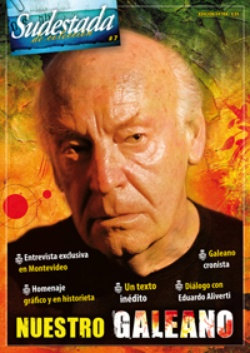

Buscar
"La memoria es una especie en vías de extinción"
Para conversar con Eduardo Galeano hay que encontrarse en el Café Brasilero, en la ciudad vieja de Montevideo. Y ese lugar no es una elección casual. Para este escritor que no vive en el pasado pero sí que añora la época de los cafés "donde había tiempo para perder el tiempo", ese es el sitio elegido en el cual dejarse llevar durante horas en una charla distendida.
Edición Especial N° 7
Nuestro Galeano
Sudestada de Colección
Comprar edición impresaSumario
- "La memoria es una especie en vías de extinción"
- "Todo puede nacer de nuevo"
- Memorias abiertas
- Cuestión de pelotas
- "Soy un hereje de larga data"
- El abrazo de las palabras
- Nuestro Galeano
Compartir Articulo
Para conversar con Eduardo Galeano hay que encontrarse en el Café Brasilero, en la ciudad vieja de Montevideo. Y ese lugar no es una elección casual. Para este escritor que no vive en el pasado pero sí que añora la época de los cafés "donde había tiempo para perder el tiempo", ese es el sitio elegido en el cual dejarse llevar durante horas en una charla distendida.
La excusa de esta nueva entrevista, realizada a fines de noviembre de 2012, es conversar sobre su último libro, Los hijos de los días; un mosaico de la Historia con mayúsculas, en el que, a modo de calendario, cada día cuenta una historia, con las palabras mínimas a las que ya nos tiene acostumbrados Galeano desde hace años. Fechas inoxidables, personajes que perduran -de los buenos y de los malos-, episodios que cambiaron el mundo para siempre, injusticias de todos los colores, batallas perdidas, pequeños triunfos, grandes esperanzas; todo va y viene en la línea del tiempo y reconstruye lo que somos y lo que hicieron de nosotros.
Por eso Eduardo llega con una ejemplar del libro debajo del brazo, para regalarnos, al mejor estilo de los cuentacuentos, algunos escritos que relaciona con los temas que van surgiendo a lo largo de la charla.
Pero también hay un tiempo de mirar hacia atrás, de recordar a esos amigos que ya no están, los proyectos que forjaron la juventud del periodista de entonces; hablar del presente en Uruguay y tomarse un rato para analizar lo que sucede con el pueblo de Palestina; y mirar hacia adelante: a los chicos, esos pequeños portadores de verdades y libertades que después nos cercenan los adultos, a la maquinización que avanza y nos pone en la mira de los objetos que creamos para que nos faciliten la existencia, a esas palabras que le siguen brotando mientras escribe y tacha y simplifica y limpia.
-¿De dónde proviene esa idea de que somos hijos de los días?
-De una frase que escuché en una comunidad maya hace muchos años: "Nosotros somos hijos de los días", que me impresionó muchísimo porque es la única cultura de las américas en la que el tiempo funda el espacio. Me quedó zumbando en la cabeza durante años. Si es así esa idea, entonces cada día debe tener alguna historia que contar. Estamos hechos de átomos pero también de historias. Este libro son 366 historias. Después Albert Einstein le dio categoría científica a esto del tiempo, pero era maya sin saberlo... me encantó la idea del tiempo generando y generándonos a nosotros, los humanitos, y a su vez nosotros con historias para contar.
-Y en este libro volviste a los dibujos...
-Sí. En realidad son collages, son pegotes. Yo no soy un artista: agarro tijeras, engrudo, revistas, diarios y almanaques. Son miniaturas sin ningún valor artístico pero que a mí me entretienen. Y además vendría a ser un contrapunto de los textos: cuando yo era chico me encantaba leer los libros ilustrados, con figuritas. Cuando venían sin figuritas era espantoso. Entonces hago así los libros, como a mí me gustaban de chico.
Algo similar me pasa con la fotografía, que me encanta, pero yo soy un pésimo fotógrafo. Tampoco hay que confundir el violín con la música... es un instrumento. Yo soy muy amigo del brasileño Sebastião Salgado y si ves las camaritas con las que él trabaja, pensás: "esto no da ni para un cumpleaños infantil", y sin embargo hace unas fotografías increíbles. Salgado era economista y nunca se le había ocurrido estudiar fotografía ni nada, y le prestaron una cámara y fotografió el desierto de Salhen. Y a partir de ahí se convirtió en quien es ahora. Hace diez años que está con una nueva investigación: cómo empezó el mundo, y tiene un trabajo excelente: registra sólo las escenas de amor, desde los distintos puntos de vista, incluso con animales, en todas partes del mundo.
-Por la brevedad de los textos y la cantidad de personajes presentados, tus libros vendrían a funcionar como disparadores, para que los lectores sigan profundizando por su cuenta...
-Esa es la idea, la de escribir de tal manera que lo que uno escribe se multiplique dentro de quien lo recibe con sus palabras y sus silencios; que sea un vaivén creativo, no un acto de consumo. Que se genere un diálogo de verdad.
Por ejemplo, en este libro vuelvo a traer a Simón Rodríguez. Un oculto de la historia; ahora se va a editar un libro en Uruguay sobre él y creo que hice mucho para que se visibilice. Con estos grandes personajes uno descubre no sólo las estatuas que sobran sino, sobre todo, las que faltan.
Una de las cosas que más me interesan es cómo Simón Rodríguez planteó el uso de las manos: la enseñanza manual mezclada con la intelectual estaba prohibida por la tradición colonial. En el siglo XVII, un rey borgón decide en España que el hecho de usar las manos en el trabajo no te degrada, es decir que no se pierde el título de hidalguía ni el derecho a ser llamado "don" por usar las manos. Pero antes era denigrante. Hay decretos anteriores a ese que hablan claramente de los oficios viles; eran todos los que usaban las manos: carpintería, albañilería, trabajo de la tierra, alfarería, que eran los que pagaban impuestos; en cambio, los curas holgazanes y los milicos no pagaban.
Y don Simón pregonaba que fueran juntos: estaba en contra de esa división del trabajo, que en definitiva es una división de clase: él desafiaba la estructura de clase establecida, que provenía de la colonia, que generó una sociedad de zánganos, donde el que valía era el que vivía sin hacer nada... y eso después se transmitió en los tangos. Todavía pesa mucho el desprecio por el trabajo manual y la relación a veces absurda con lo que se llama trabajo intelectual, que habría que ver hasta dónde se puede separar uno del otro. El hecho es que esas eran máscaras que enmascaraban -y todavía lo hacen- una estructura de clases muy injusta que expulsa a la mayoría de la población, y también el racismo, porque los oscuritos eran los que trabajaban con las manos, en cambio los blanquitos eran superiores que los miraban trabajar: eran doctores. Y contra eso se levanta don Simón.
-Las mujeres adquieren un protagonismo notorio en este nuevo libro...
-Porque voy escribiendo a medida que voy descubriendo mujeres que valen la pena: no por el hecho de ser mujeres, sino por ser personas que hicieron o dijeron cosas que vale la pena recordar o restablecer.
(La nota completa en la edición especial #7 - Enero 2013)
Comentarios
Nadia Fink
Articulos más vistos


LIBRERÍA SUDESTADA

Colección infantil

Distribuidora de Libros

Suscripción

Sudestada en URUGUAY

Otros articulos de esta edición
 Una mirada sobre sus libros III
Una mirada sobre sus libros III
El abrazo de las palabras
El libro más entrañable de Galeano se abre de par en par. En él comienzan a desandarse esos relatos breves, ...
 Editorial
Editorial
Nuestro Galeano
Memorias abiertas
En 1975 un pibe descubre las tapas de un libro en un tacho de basura. En una época en la ...
 Entrevista de Eduardo Aliverti
Entrevista de Eduardo Aliverti
"Todo puede nacer de nuevo"
En noviembre de 2010, Eduardo Aliverti entrevistaba al Eduardo del otro lado del charco, Galeano, para el programa que aún ...
 Entrevista febrero 2004
Entrevista febrero 2004
"Soy un hereje de larga data"
Referente ineludible del presente americano y cronista en tiempos de fuego y de ceniza, el escritor Eduardo Galeano relata en ...
 Una mirada sobre sus libros II
Una mirada sobre sus libros II
Cuestión de pelotas
Una de sus pasiones, aquella que compartió con sus entrañables amigos, el Gordo Soriano y el Negro Fontanarrosa. El motivo ...